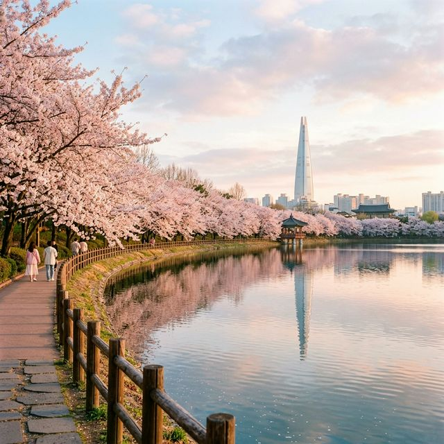
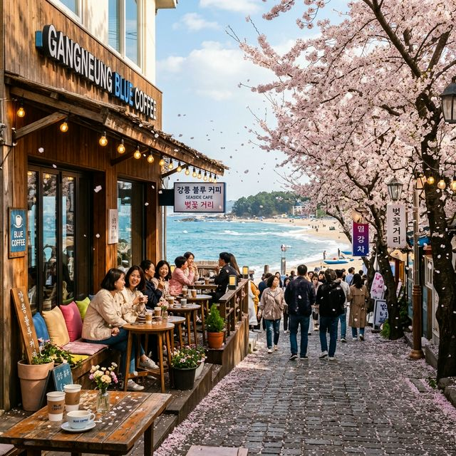
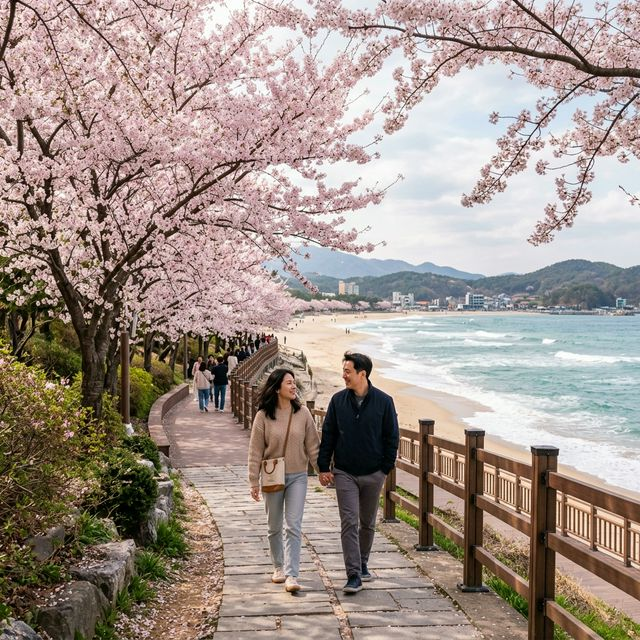

경포호에 벚꽃이 피었습니다: 2026 강릉 경포벚꽃축제 4/4~11 완벽 가이드 — 5.73km 벚꽃길·야간 조명·안목 커피거리 총정리
강릉 하면 파도 소리, 파도 소리 하면 경포해변. 그러나 4월의 강릉은 전혀 다른 얼굴로 여행자를 맞이합니다. 경포호 주변 약 5.73km의 벚꽃 가로수 길이 일제히
분홍빛으로 물드는 봄이 돌아왔습니다. 2026년 경포벚꽃축제는 4월 4일(토)부터 4월 11일(토)까지 8일간 경포대 및 경포호 일원(주 행사장: 경포 습지광장)에서
펼쳐집니다. 올해는 강릉시 3대 벚꽃 축제(경포·솔올블라썸·남산)가 통합 홍보되며 스탬프 투어, 야간 경관조명, 버스킹 공연 등 볼거리가 풍성합니다. KTX 강릉역에서 경포호까지의 동선, 안목해변
커피거리 연계 코스, 주차 꿀팁까지 1만 자로 완벽 정리해 드립니다.
🌸 2026 강릉 경포벚꽃축제 핵심 인포 (공식 발표 기준)
- 축제 기간: 2026년 4월 4일(토) ~ 4월 11일(토) — 8일간
- 장소: 강원특별자치도 강릉시 경포대 및 경포호 일원 / 주 행사장: 경포 습지광장
- 벚꽃길 규모: 경포호 및 생태저류지를 따라 이어지는 약 5.73km 구간
- 입장료: 무료
- 만개 예상: 4월 1일 개화 시작 → 4월 4일~8일 절정 전망 (기온에 따라 변동 가능)
- 특이사항: 강릉 3대 벚꽃 축제 통합 홍보 + 스탬프 투어 이벤트 진행

▲ 경포호 수면에 비치는 벚꽃의 반영은 강릉에서만 볼 수 있는 특별한 봄 풍경입니다. 이른 아침 방문 시 더욱 선명하게 감상할 수 있습니다. (ratio
1:1)
1. 경포호 5.73km 벚꽃길 — 구간별 완전 분석
경포벚꽃축제의 핵심은 단연 경포호 둘레를 따라 이어지는 약 5.73km의 벚꽃 산책로입니다. 경포호는 강릉을 대표하는 자연 석호(바다와 연결된 淺水호)로, 호수 주변으로
수령이 오래된 벚나무들이 터널처럼 가지를 뻗어 있습니다. 이 길을 천천히 걷는 데 걸리는 시간은 약 1시간 30분~2시간이며, 중간에 벤치와 쉼터가 적절히 배치되어 있어 아이를 동반한 가족 여행자도
부담 없이 즐길 수 있습니다.
올해 특히 주목할 점은 경포 습지광장이 주 행사장으로 지정되면서 행사 시설물이 집중된다는 점입니다. 버스킹 무대, 포토존, 먹거리 부스 등이 습지광장을 중심으로 배치될
예정이며, 해질 녁 이후에는 경관조명이 점등되어 낮과는 다른 야간 벚꽃 풍경을 감상할 수 있습니다.
걷기가 부담스럽다면 자전거 대여를 활용하는 것도 좋습니다. 경포호 주변에는 자전거 대여소가 여러 곳 운영되며, 바퀴 위에서 바라보는 벚꽃길은 도보 산책과 또 다른 감동을
선사합니다.
2. 강릉 3대 벚꽃 축제 통합 — 스탬프 투어 활용법
2026년부터 강릉시는 경포·솔올블라썸·남산 세 곳의 벚꽃 축제를 통합 홍보하는 전략을 채택했습니다. 각각의 축제장을 모두 방문하고 스탬프를 모으면 소정의 기념품을
증정하는 '강릉 벚꽃 스탬프 투어'도 함께 진행됩니다. 강릉까지 먼 길을 여행했다면, 경포만 보고 돌아오는 것은 손해입니다. 세 곳을 모두 도장을 받아가며 일일 투어로
완성해보세요.
강릉 3대 벚꽃 축제 비교 (2026년 통합 홍보)
| 축제명 |
장소 |
특징 |
| 경포벚꽃축제 🌸 |
경포호·경포대 일원 |
5.73km 호수 둘레 벚꽃길. 강릉 최대 규모. 야간 조명·버스킹 포함. |
| 솔올블라썸 🌸 |
강릉 솔올공원 일대 |
소나무와 벚꽃의 조화. 비교적 한적하며 가족 나들이에 적합. |
| 남산벚꽃축제 🌸 |
강릉 남산공원 |
시내 접근성 좋음. 강릉 도심 야경과 벚꽃을 동시에 감상 가능. |

▲ 강릉 안목해변 커피거리는 동해 바다를 바라보며 커피를 마시는 국내 유일의 바닷가 커피 거리입니다. 경포벚꽃 관람 후 필수 코스로 추천합니다. (ratio
1:1)
3. KTX 강릉역에서 경포호까지 — 이동 동선 완전 정복
서울에서 강릉까지는 KTX를 이용하면 약 1시간 50분만에 도착할 수 있습니다. 강릉역에서 경포호 주 행사장인 경포 습지광장까지는 약 5km 거리이며, 아래와 같은 이동 방법을 선택할 수 있습니다.
🚌
시내버스 (가장 저렴): 강릉역 앞 버스정류장에서 202번, 202-1번 버스 탑승 → 경포해변 또는 경포호 인근 정류장 하차. 약 20~25분 소요. 요금
1,350원.
🚕
택시·카카오택시 (가장 편리): 강릉역에서 경포호까지 약 10~12분, 요금 약 8,000~10,000원 예상. 인원이 3명 이상이라면 택시가 버스보다 경제적.
🚲
자전거 (가장 낭만적): 강릉시 공공자전거 '타요'를 이용하면 강릉역 인근 대여소에서 자전거를 빌려 경포호까지 자전거 전용 도로를 따라 이동 가능. 약 20분
소요.
🚗
렌터카 (가장 자유로운 여행): 강릉 KTX 100% 환급 혜택(코레일 여행가는 봄)과 결합하면 기차+렌터카 조합으로 최저가 여행 가능. 강릉역 인근 렌터카 업체
다수 운영. 축제 기간 경포호 주변 주차는 혼잡하므로 경포해변 공영주차장 이용 권장.
4. 안목해변 커피거리 — 동해 바다 뷰 카페 완전 정복
경포벚꽃 관람을 마쳤다면 반드시 들러야 할 곳이 있습니다. 강릉여행의 또 다른 상징, 안목해변 커피거리입니다. 경포호에서 차로 약 5분(도보 20분) 거리. 안목해변을
따라 약 400m 구간에 개성 넘치는 카페들이 줄지어 들어선 이 거리는 단연 국내 최고의 '바닷가 커피 거리'입니다.
커피 한 잔을 들고 동해 파도 소리를 들으며 벚꽃 이야기를 나누는 시간은 강릉에서만 누릴 수 있는 특별한 봄날의 사치입니다. 커피 자판기에서 시작된 이 거리는 지금은 강릉의 대표적인 관광 랜드마크가
되었으며, 가게마다 자신만의 시그니처 커피와 인테리어로 경쟁을 펼칩니다.
☕ 안목 커피거리 추천 스타일
· 바다 뷰 테라스 선호: 동해를 직접 바라볼 수 있는 2층 테라스 좌석이 있는 카페를 예약하거나 오픈 즉시 방문하세요.
· 포토 명소: 안목해변 해안 산책로에서 거리가 한눈에 보이는 뷰 포인트에서 인증샷을 남기세요.
· 방문 시간: 일몰 약 1시간 전(오후 6시경)이 빛이 가장 아름다운 골든아워로, 바다와 하늘 색이 환상적으로 변합니다.

▲ 경포 해안로를 따라 이어지는 벚꽃 산책로. 바다 바람을 맞으며 걷는 이 길은 강릉 봄 여행의 하이라이트입니다. (ratio 1:1)
5. 경포 벚꽃 한 방에 즐기는 강릉 당일치기 코스
강릉 경포벚꽃 당일치기 추천 코스 (KTX 출발 기준)
| 시간 |
장소 |
포인트 |
| 07:30 |
서울 청량리·서울역 출발 (KTX) |
코레일 여행가는 봄 인구감소지역 혜택 → KTX 운임 100% 환급 대상 |
| 09:30 |
강릉역 도착 → 경포호 이동 |
시내버스 202번 탑승 or 택시 10분 |
| 10:00~12:00 |
★ 경포호 5.73km 벚꽃 산책 |
경포 습지광장 포토존·버스킹 공연 관람, 스탬프 투어 시작 |
| 12:00~13:00 |
경포 주변 점심 식사 |
경포해변 주변 가성비 횟집 or 초당 두부마을 순두부찌개 |
| 13:30~14:30 |
솔올블라썸 or 남산벚꽃 (스탬프 투어 2·3번째) |
한적한 분위기의 두 번째 벚꽃 명소 순방 |
| 15:00~17:00 |
★ 안목해변 커피거리 |
동해 뷰 카페 골든아워 방문. 시그니처 커피 + 바다 인증샷 |
| 17:30 |
강릉역 출발 (KTX 귀경) |
약 19:30 서울 도착 |
6. 주차 안내 및 실전 꿀팁
- 경포해변 공영주차장 최우선 이용: 경포호 바로 옆에는 주차 공간이 제한적입니다. 축제 기간에는 경포해변 공영주차장(비교적 넓음)에 주차 후 도보 10분 이동을
추천합니다.
- 오전 일찍 방문이 정답: 축제 기간 경포호 주변은 오전 11시 이후부터 급격히 혼잡해집니다. 오전 9~10시 도착이 가장 쾌적하게 감상할 수 있는 황금
타이밍입니다.
- 기상 변수 대비: 강릉은 동해안 특성상 봄철 갑작스러운 해풍이 불 수 있습니다. 얇은 겉옷이나 바람막이를 반드시 챙기세요. 벚꽃 개화 상황은 강릉시 공식 SNS나
네이버 지역 검색으로 출발 전날 꼭 확인하세요.
- 야간 조명 관람 추천: 만약 1박 일정이 가능하다면, 경포 습지광장의 야간 경관조명이 켜지는 일몰 후 시간대도 놓치지 마세요. 낮과는 완전히 다른 분위기의 벚꽃
야경을 즐길 수 있습니다.
4월의 경포호는 대한민국에서 가장 아름다운 봄 풍경 중 하나입니다. 5.73km의 벚꽃 길을 걸으며 바라보는 호수의 반영, 동해 바람을 맞으며 마시는 안목 커피거리의 한 잔, 그리고 세 곳의 벚꽃
명소를 도장으로 완성하는 스탬프 투어까지. 8일간의 짧은 기간이지만, 강릉의 봄은 이 여덟 날 안에 모든 것을 담아냅니다. 4월 4일, 강릉으로 출발하세요. 🌸🚆
👉 함께 읽으면 좋은 글:
KTX 운임 100% 환급받는 코레일 여행가는 봄 혜택 완전 정복
데이터 출처: 강릉시 공식 발표 / 조선일보 / 다음 지역 여행 정보 / 네이버 강릉 경포벚꽃축제 개화 전망 종합
#강릉벚꽃축제
#경포벚꽃축제2026
#경포호벚꽃
#강릉봄여행
#강릉4월
#안목커피거리
#경포해변
#강릉당일치기
#KTX강릉
#벚꽃절정
#강릉스탬프투어
#솔올블라썸
#강릉벚꽃개화